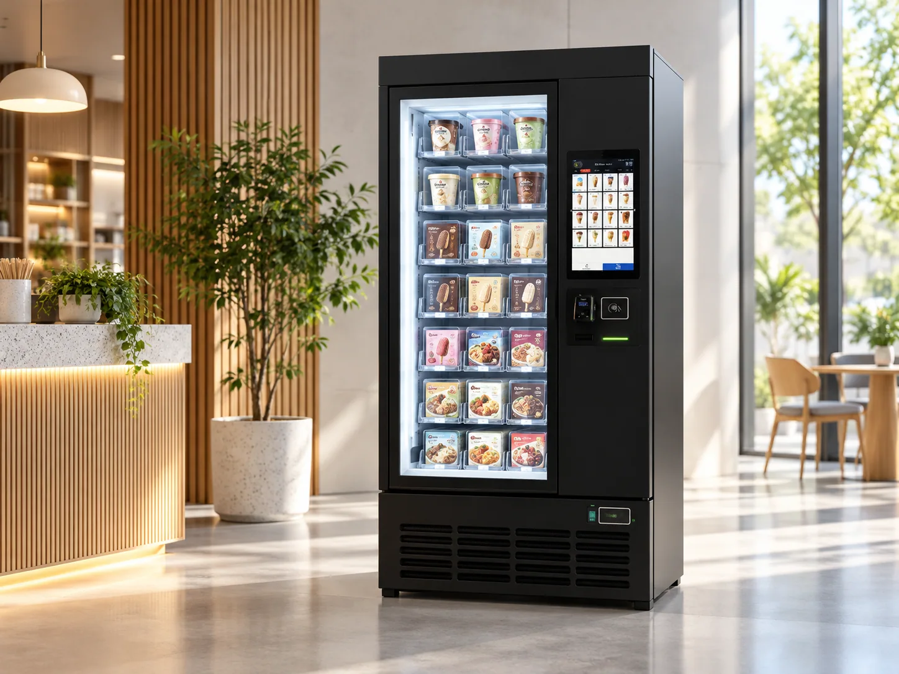
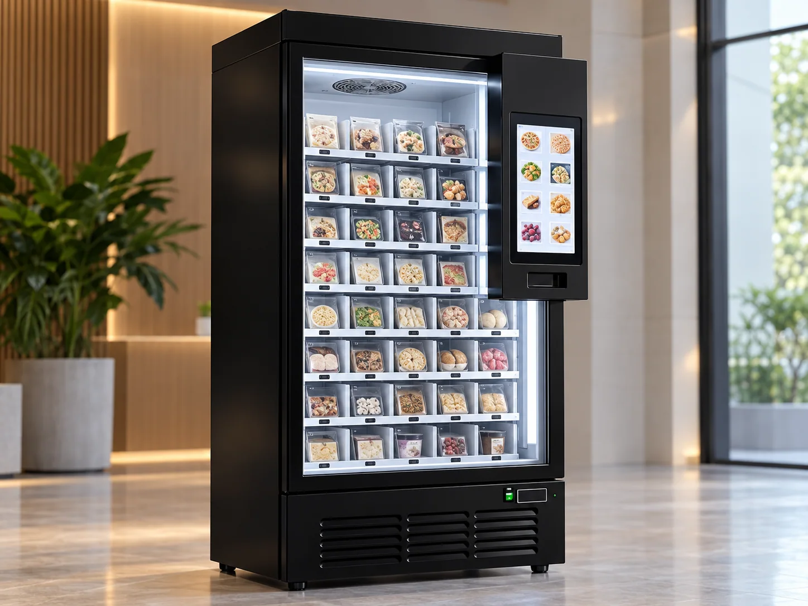

상품별 블록 구성
소형·중형·대형 상품에 따라 보관 블록 크기를 다르게 구성할 수 있습니다.
아이스크림·냉동식품 등 상품의 크기와 종류에 맞춰 블록을 구성하는 냉동 블록형 쇼케이스 자판기를 소개합니다.

연출 이미지판매할 상품의 크기와 종류에 맞는 보관 구성이 핵심입니다.
소형·중형·대형 상품에 따라 보관 블록 크기를 다르게 구성할 수 있습니다.
선택한 상품의 블록을 잠금 해제해 인도하는 구조입니다.
재고·매출 및 운영 데이터 관리와 화면을 통한 상품 안내 기능이 있습니다.
상품 크기에 따라 45칸·24칸·16칸 등의 보관 구성을 검토할 수 있습니다. 단순히 칸 수가 많다고 적합한 것은 아니며 실제 상품의 포장 크기와 운영 방식을 함께 확인해야 합니다.
대표 모델의 높이는 약 2,050mm입니다. 최종 제품 규격·냉동 온도·인증·사양은 공급 모델별 확인이 필요합니다.

냉동 블록 구성, 목표 온도, 전원 조건, 보관 상품 크기, 결제 및 관리 기능을 확인하세요.
반입 동선, 설치 공간, 냉동 유지 방식, 전기료, 상품 공급·재고 관리 방식도 함께 검토하세요.
아이스크림, 밀키트, 육류, 냉동식품 등 상품 유형에 맞춘 블록을 구성할 수 있습니다. 실제 보관 적합성은 식품별 요구 온도와 제품 사양을 함께 확인해야 합니다.
멀티자판기는 다양한 상온·냉장 상품의 판매와 트레이 구성이 중심이고, 냉동 블록형 쇼케이스는 냉동 상품 보관과 블록별 배출 방식이 중심입니다.
SAFE24는 냉동 쇼케이스와 멀티자판기를 함께 배치하는 방식도 가능합니다. 실제 가능 대수는 전력·면적·동선 등을 검토해야 합니다.
냉동자판기는 아이스크림, 밀키트, 포장 냉동식품처럼 냉동 상태로 보관해야 하는 상품을 판매하는 데 활용됩니다. 다만 기기에 들어간다고 모두 판매할 수 있는 것은 아닙니다. 식품별 표시 보관 온도와 포장 크기, 유통·판매 형태가 실제 기기의 기능에 맞는지 확인해야 합니다.
같은 냉동식품이라도 아이스크림 컵과 밀키트 박스는 필요한 공간이 다릅니다. 따라서 상품의 가로·세로·높이, 포장 중량, 예상 판매량을 정리한 뒤 블록 수와 크기를 결정하는 편이 좋습니다.
| 구분 | 중점 확인 사항 | 구매 판단 기준 |
|---|---|---|
| 보관 방식 | 블록형 구획과 문 개방 구조 | 상품별 공간 배분이 가능한가 |
| 온도 조건 | 목표 온도와 유지 관리 | 판매 식품의 요구 온도를 충족하는가 |
| 운영 기능 | 상품 선택·결제·재고 확인 | 관리 담당자가 운영하기 편한가 |
| 현장 설치 | 전원·환기·반입 동선 | 설치와 유지관리 공간이 충분한가 |
| 비용 | 본체·배송·추가 공사·유지비 | 총도입비를 비교했는가 |
냉동자판기는 실내 온도와 환기 조건에 따라 냉각 장치의 작동 부담이 달라질 수 있습니다. 제품별 권장 이격거리와 소비전력은 실제 선택 모델의 사양을 기준으로 확인해야 하며, 배전 용량이 부족한 현장은 별도 공사가 필요할 수 있습니다.
아이스크림이나 냉동 밀키트처럼 식품을 판매할 때는 판매자의 영업신고·보관·상품 관리 의무도 운영 형태에 따라 검토해야 합니다. 기기 공급 범위와 운영자의 식품 관리 책임을 구분하는 것이 중요합니다.
문의 접수 후 공급 담당자가 제품·구매 조건·설치 일정을 안내합니다.